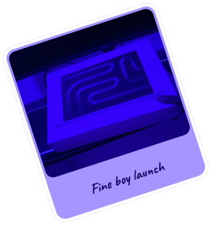
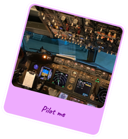
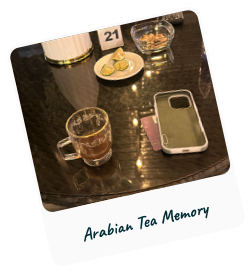
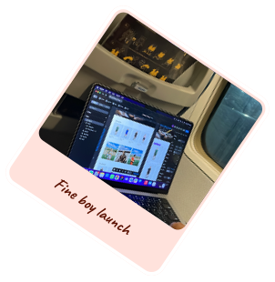
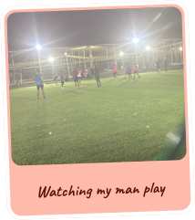

hang your Favorite photos
Drag the photos and arrange them tap a photo to pick it up, tap again to place it







Drag the photos and arrange them tap a photo to pick it up, tap again to place it




